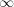

A snake is a “way of adding a winding line to a path.” To be a bit more precise, you use snakes to extend the path and the commands for using snakes start with \pgfpath. However, snakes do not necessarily extend the path using line-to and curve-to operations; rather, they can also contain move-to operations and, thereby, cause the path to be split into many subpaths.
As an example, let us consider a simple snake like the zigzag snake. It looks like this:
|
The above example demonstrates the two key features of snakes:
In order to use snakes, they first have to be declared. This declaration contains a detailed description of how each segement of the snake looks like and in what ordering the different possible segments are used.
Once a snake has been declared, it can be used. For this you specify a target point and a snaked line will be added from the last point current point to the target point.
When you declare a snake, you provide a description of how the different segments of the snake will be rendered. The description of each segment should be given in a way as if the target of the snaked line where at (+,0) and as if the segment’s start where at the origin. Thus, for example, the segment of the zigzag might be defined using the following code:
|
PGF will ensure that an appropriate coordinate transformation is in place when the snake segment is added to the path such that the snake segment actually points in the right direction. Also subsequent snake segments will be transformed such that they are “further along the line” toward the target. All transformations are setup automatically.
Note that we did not use a \pgfpathmoveto{\pgfpointorigin} at the beginning of the segment code. Doing so would subdivide the path into numerous subpath. Rather, we assume that the previous segment caused the current point to be at the origin.
While we can now describe segments, we still need a way to “stop” the snake. Also, PGF needs to know the width of the different snake segments such that it can translate the next segment correctly. Even though it would be possible to compute all this information automatically, PGF does not do so and you have to provide the information “by hand” for each segment.
Up to now our snakes only have one segment that is repeated again and again. However, we might also like to have different segments and use rules to describe which segment should be used where. For example, we might have special segments at the start and at the end.
For snakes we use a mechanism known in computer science as finite automata to describe which segment is used in each part of the snake. The idea is the following: For the first segment we start in a special state called the initial state. In this state, and also in all other state later, PGF first computes how much space is left on the snake. That is, PGF keeps track of the distance to the target. Attached to each state there is a set of rules of the following form: “If the remaining distance is less than x, switch to state q.” PGF checks for each of these rules whether it applies and, if so, immediately switches to state q.
Only if none of the rules tell us to switch to another state, PGF will execute the state’s code. This code will add a segment to the path. In addition to the rules there is also width parameter attached to each state. PGF then translates the coordinate system by this width and reduces the remaining distance. Then, PGF either stays in the current state or switches to another state, depending on yet another property attached of the state.
The whole process stops when a special state called final is reached. The segment of this state is added to the path immediately (it is often empty, though) and the process ends.
This command declares a new snake called <name>. The <states> argument contains a description of the snake automaton’s states and the transitions between them. The <initial state> is the state in which the automaton starts.
The <states> argument should consist of \state commands, one for each state of the snake automaton. The \state command is defined only when the <states> argument is executed.
|
The \state command works as follows:
This command declares a new state inside the current snake automaton. The state is names <name>.
When PGF is in state <name>, the following things happen:
The following options are allowed inside the <options>:
In addition, this option will cause an immediate switch to the state final if the remaining distance is less than <dimension>. The effect is the same as if you had said switch if less than=<dimension> to final just before the width option.
There are two dimensions that are useful inside snake automata:
This TEX dimension holds the remaining distance to the target.
This TEX dimension holds the distance already completed on the snake.
As a final example we present a more complicated snake that makes use of the different options:
|
Only two very simple and basic snakes are predefined when you load PGF. For more interesting snakes you can use the package pgflibrarysnakes.
This most trivial of all snakes is simply a straight line. This snake is typically not used in a “stand alone” fashion. Rather, it is useful as a “subsnake” of the \pgfsnakesto command.
Arguably, this snake is even simpler than the previous snake. This snake consists of a simple move-to operation. Like the lineto snake, it is useful as a “subsnake” of the \pgfsnakesto command.
Three commands can be used to use a snake.
This command will append the <snake> to the current path. The length of the snake is given by <length>. The <vector> should be a normalizes vector (a vector having length 1pt) pointing in the direction in which the snake should grow.
|
This command will append the snakes in the <snake list> to the current path such that it ends at <point>. This command calls the previous one (repeatedly, possibly) after having computed the distance from the current point to <target> and normalized the vector connecting the current point to the target.
The <snake list> is a comma-separated list of pairs consisting of a snake name in curly braces and a distance in curly braces. For example, a snake list might be {lineto}{1cm},{moveto}{2cm}. This is interpreted as follows: Use a lineto snake for the first centimeter of the way to the <target>, then use the moveto snake for the next two centimeters.
No attempt is made to check or ensure that the distances of the “subsnakes’ add up to the distnace from the current point to the <target>. However, it is possible to refer to this distance inside the <snake list>: While the snake list is processed, the two TEX-dimensions \pgfsnakeremainingdistance and \pgfsnakecompleteddistance will be set to the correct values. For example, consider the example from a above, consisting of a lineto and a moveto snake. Suppose the distance to <target> where 5cm. Then, when the length of the first subsnake is computed, the remaining distance willbe set to 5cm and the completed distance to 0cm. When the length of the second subsnake is computed, the remaining distance wil be 4cm and the completed distance will be 1cm.
Here are some useful examles: {zigzag}{\pgfsnakeremainingdistance} is a <snake list> that consists only of a zigzag snake whose length is the total distance from the current point to the <target>. Next, to get a snake that is a zigzag snake that is preceeded and succeeded by 3mm of lineto, you can use the following:
|
Note that the computation of the distance may be imprecise. In general, the placement precision of the snakes will not be perfect.
This command is just a shortcut for calling \pgfpathsnakesto for a single snake whose length is \pgfsnakeremainingdistance.
|
As was already mentioned, when each segment of the snake is added to the path, an appropriate coordinate transformation will be in force. It is sometimes useful to add an additional transformation locally. For example, by reflecting everything around the x-axis right before each segment is added, the snake will effectively be mirrored along the path. The following command allows you to install such a “last minute transformation.”
The <code> will be executed at the very beginning of each segment. Normally, this be a transformation command that changes the y-axis in some way.